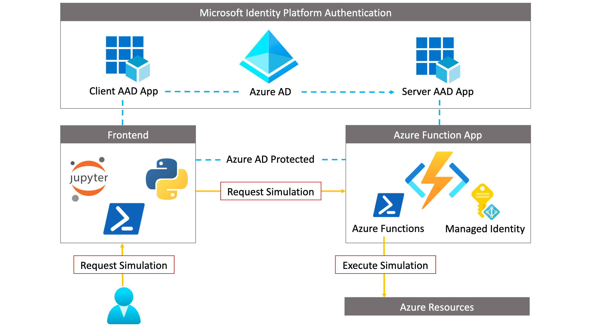

Cloud Katana¶
Unlocking Serverless Computing to Assess Security Controls

About¶
Cloud Katana is a cloud native tool developed from the need to automate simulation steps on-demand in multi-cloud and hybrid cloud environments. This tool is an event-driven, serverless compute application built on the top of Azure Functions that expedites the research process and validation of security controls.
Docs Structure¶
This website is built with Jupyter Book and is organized into a few major sections!
Getting Started
Step-by-step guides to install Cloud Katana and run a few demos
Internals
Sections covering specific areas in more depth
Notebooks
Templates to execute actions as Jupyter Notebooks!
Contributing¶
Learn more and get involved
- 💡 Open an issue
We track enhancement requests, bug-reports, and to-do items via GitHub issues.
- 💬 Join the discussion
We have community discussions, talk about ideas, and share general questions and feedback in our GitHub discussions space.
- 🙌 Join the community
Cloud Katana partners with the Open Threat Research (OTR) community to meet other passionate security researchers willing to collaborate and contribute back. Get an automatic invitation to the OTR Discord Server here!. We welcome anyone to join us in improving Cloud Katana and helping one another learn more about assessing security controls via serverless computing.